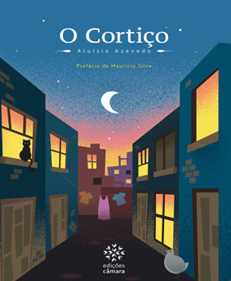
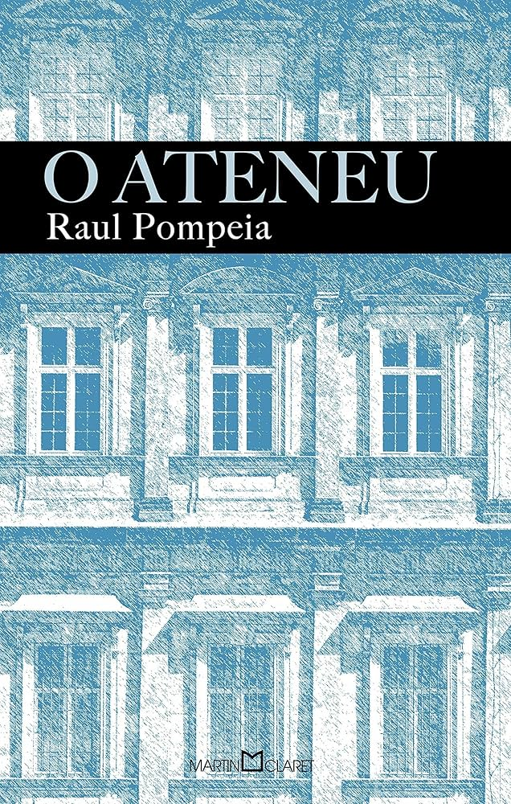
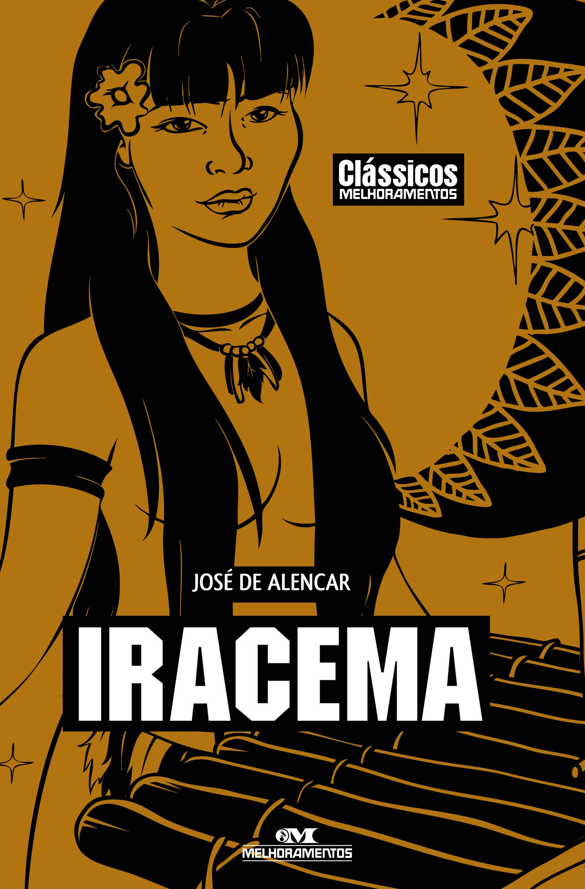
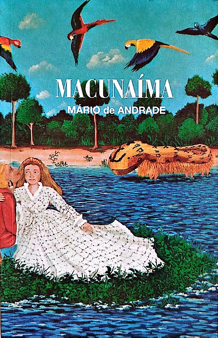

Home
Livros
Turmas
Desafios
Login
Explore a Literatura Brasileira
DOM CASMURRO
CAPITÃES DE AREIA
GRANDE SERTÃO: VEREDAS
MEMÓRIAS PÓSTURAS DE BRAS CUBAS
CÂNTICOS
A HORA DA ESTRELA
VIDAS SECAS

O CORTIÇO

O ATENEU

IRACEMA
A MORENINHA
OLHAI OS LÍRIOS DO CAMPOS

MACUNAÍMA
QUINCAS BORBAS
MEMÓRIAS DE UM SARGENTO DE MILÍCIAS
TRISTE FIM DE POLICARPO QUARESMA
A MÃO E A LUVA
IAIÁ GARCIA